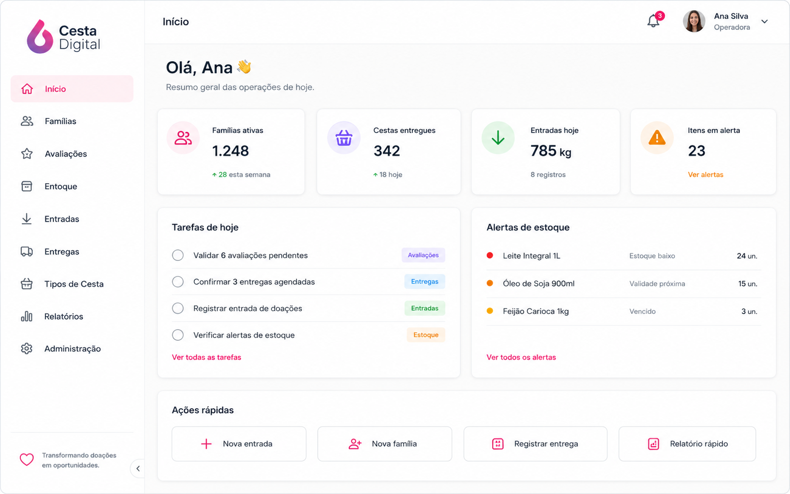
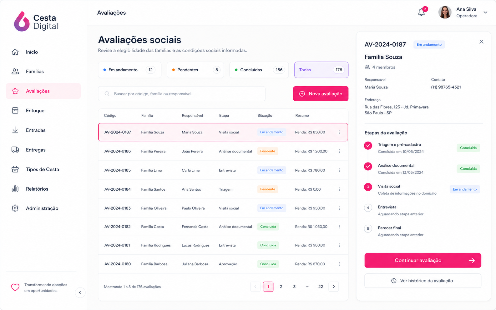
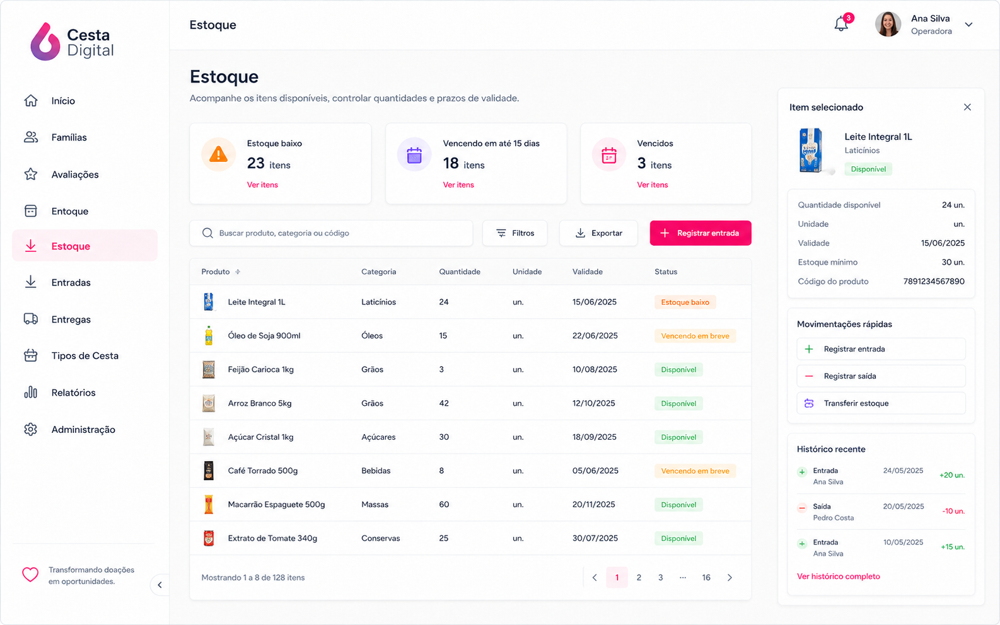
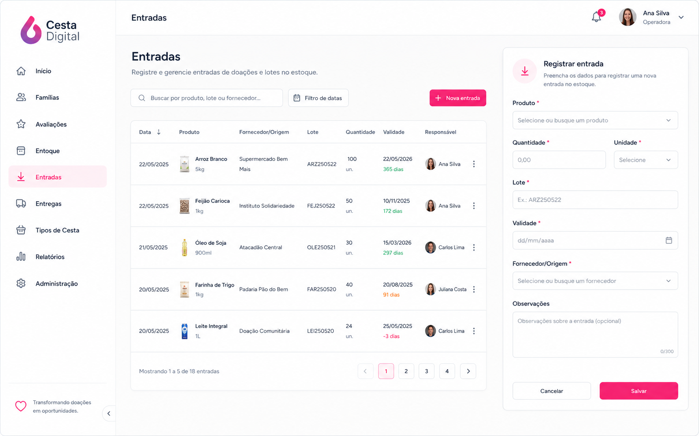
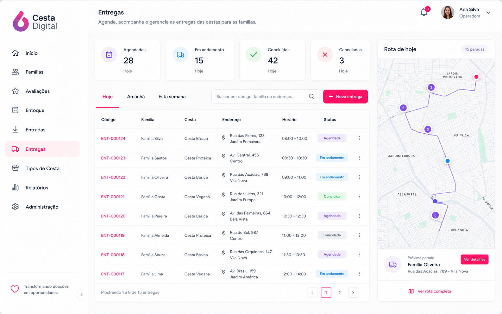
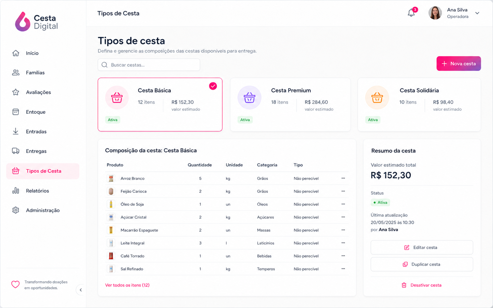
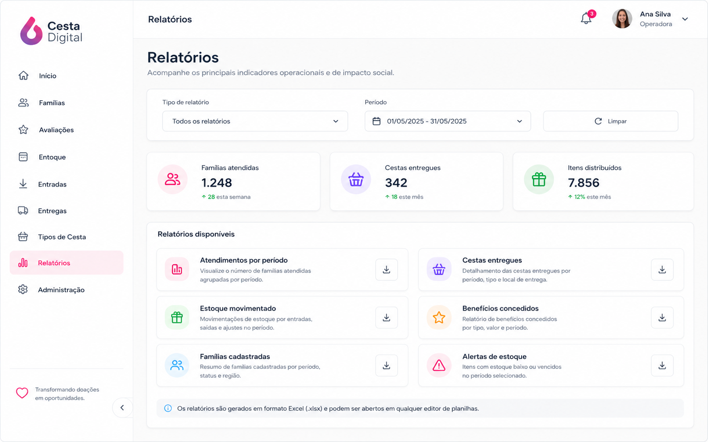
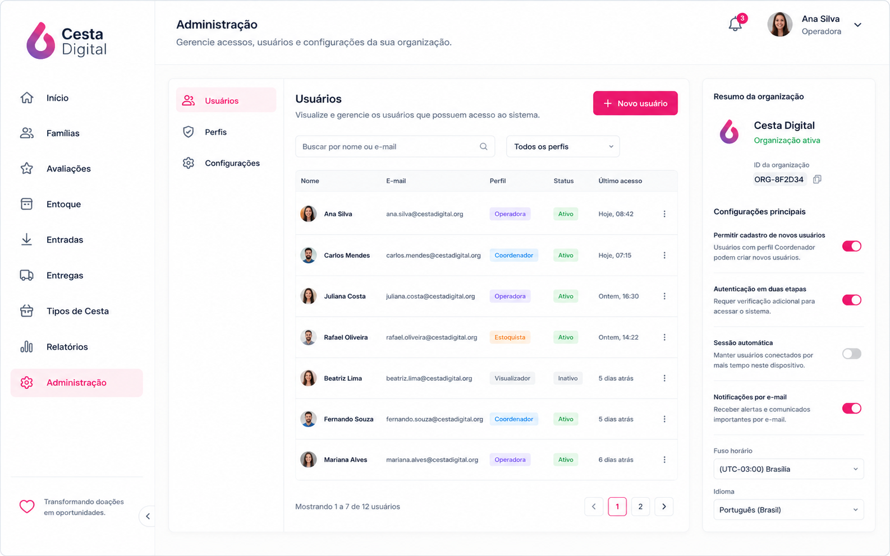

Fonte de comparação do Frontend V2. Clique em qualquer imagem para abrir a versão integral de 1586 × 992 px. Conteúdo e números são ilustrativos; composição, hierarquia e linguagem visual são a referência.







